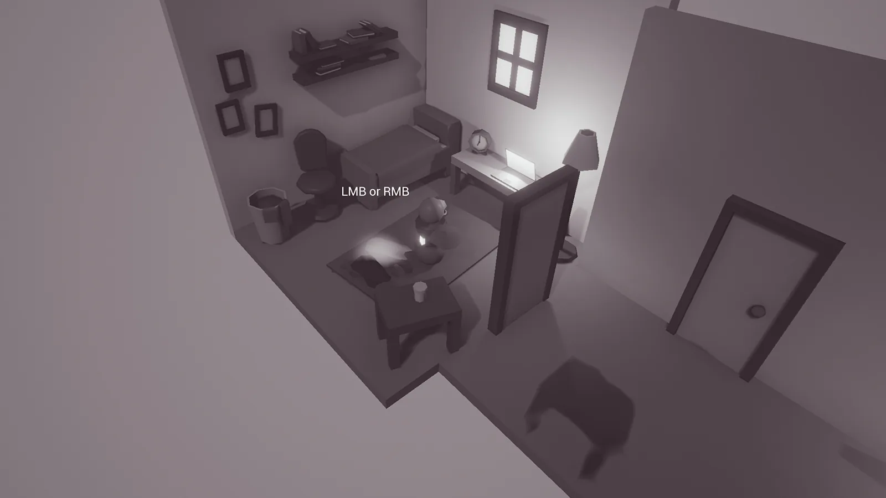
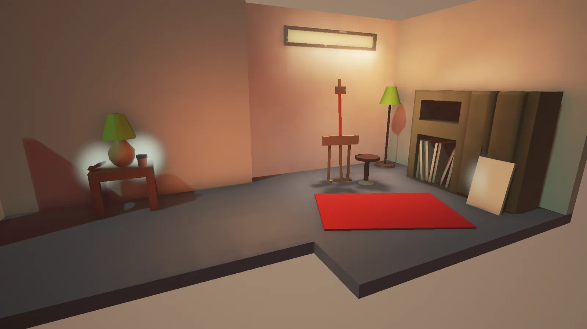
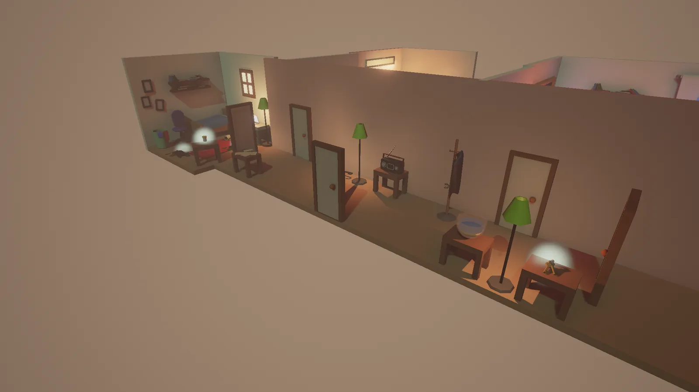

Colour By Day
- Year
- 2016
- Platform
- PC
- Engine
- Unreal Engine



An isometric puzzle game that explores the negative effect a bad routine can have on a person. The player must change their daily ritual to inject colour and positivity into their life.
My role
Four others and I designed, built and developed this small game for the Global Game Jam. My role was the scripting and general design of the gameplay, finding a fun and satisfying way to complete the puzzles.
What I did
- Scripted the game
- Designed the gameplay and puzzles
- Continuing development with the team, to release the game more widely